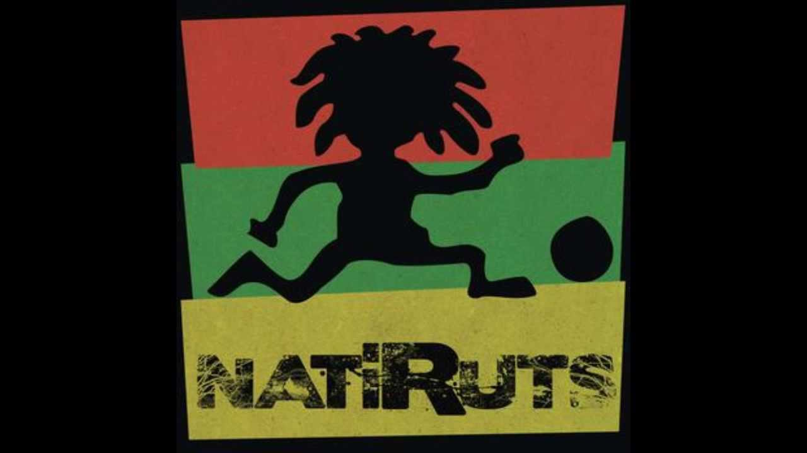
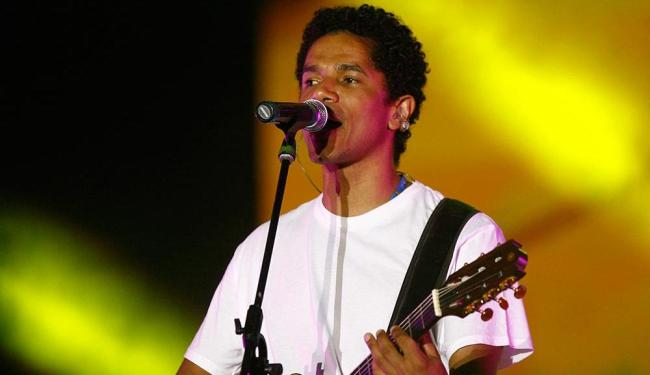
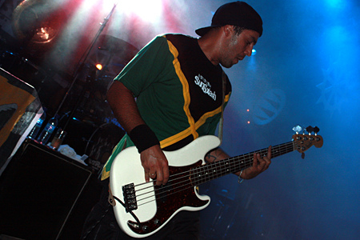

Feito por : Alexandre Victor A. - (Fonte :Wikipedia)
É uma banda brasileira de reggae pop formada em Brasília em 1996. Chamada inicialmente Nativus, a banda de reggae foi rebatizada de Natiruts devido a um grupo catarinense de música regional, Os Nativos, que entrou com um processo. A banda brasíliense defende o reggae de raiz mas incorporou ao som uma grande influência brasileira. Quando ainda chamava-se Nativus, o grupo vendeu 40 mil discos independentes com o sucesso "Presente de um beija-flor", até ser contratada pela EMI. A nova edição do disco, Nativus, vendeu 450 mil cópias. O segundo disco, Povo Brasileiro, foi produzido por Liminha e, como o reggae de Bob Marley, tem músicas com mensagens de alto teor político, como "Proteja-se e lute" e "Povo brasileiro".
Sem muitas novidades na sonoridade da banda, em 2001, é lançado “Verbalize”, com destaque para as faixas “Verbalize e "Andei Só”, hits da época. O terceiro álbum traz também a participação especial de Rodolfo Abrantes, antigo vocalista dos Raimundos, na faixa "Homem do Povo". Em 2002, gravam o disco Qu4tro , que marca a saída do guitarrista Kiko Peres da banda. Natiruts ressurge com Nossa Missão, lançado em 2005. Neste disco, produzido pelo próprio Alexandre Carlo, vocalista e principal compositor do grupo, o grande diferencial é a aproximação com o Dub, a vertente mais psicodélica do reggae, que incorpora experimentações, sem contenção na adição de efeitos, como Delays e Reverbs, surgida na Jamaica dos anos 70.
Componentes Atuais da Banda
| Imagem | Nome Integrante | Instrumento |
|  | Alexandre Carlo | Vocal, Guitarra Base, Violão |
|  | Luís Maurício | Baixo e Backing Vocal |
|
| Kiko Peres | Guitarra Solo |
|
| Pedro Mamede | Bateria |
|
| Bruno Wambier | Teclados |
|
| Denny Conceição | Percussão |
|
| João Ferreira | Cavaquinho E Violão |
|
| Bruno Patrício | Cavaquinho E Violão |
|
| Guigui Trotta | Harmônica |
Alguns dos Álbuns da Banda
| Ano de Lançamento | Disco | Capa do Album |
| 2003 | Natiruts - Luau MTV |  |
| 2006 | Natiruts Reggae Power Ao Vivo |  |
| 2012 | Natiruts Acústico no Rio de Janeiro |  |
| 2014 | #NoFilter |  |
| 2015 | Natiruts Reggae Brasil |  |
Site Oficial :NATIRUTS
Site Oficial :Wikipedia